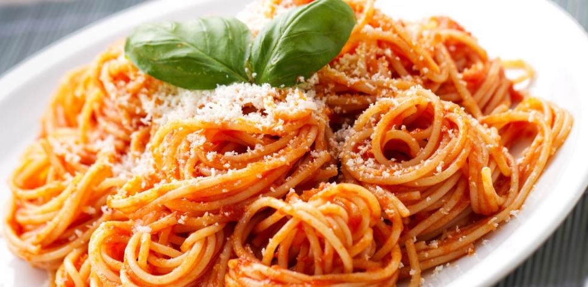

Receta de Pasta

Pasta con Jitomate y Chorizo
Aprende a preparar esta deliciosa y colorida pasta con ese sabor espectacular que sólo Hunt´s® puede ofrecerte, ideal para preparar en tus comidas familiares además el chorizo le da un toque riquísimo.
Ingredientes:
- 500 gramos de spaghetti
- 7 tazas de agua
- 1 cucharada de aceite
- 2 cucharadas de cebolla
- 3 chorizos, rodajas
- 1 taza de espárrago, cortados
- 1/2 tazas de pimiento morrón amarillo, fileteado
- 680 gramos de salsa de tomate para pasta tradicional Hunt
- 1/2 tazas de crema ácida
- 2 cucharadas de perejil, finamente picado
- al gusto de sal y pimienta
Pasos:
- En una cacerola calienta el agua y cocina la pasta hasta que este cocida, escurre, deja enfriar y reserva.
- En una sartén calienta el aceite a fuego medio y agrega la cebolla, añade el chorizo deja cocinar 5 minutos, agrega los espárragos, el pimiento morrón, la Salsa de Tomate para Pasta Tradicional Hunt's®, la crema ácida y por último sazona con sal, pimienta y perejil. Cocina por 5 minutos más.
- Sirve caliente y disfruta.